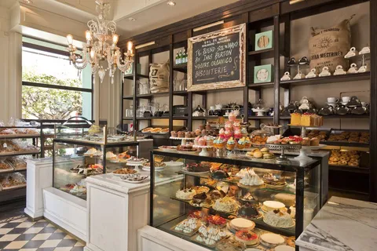

Яндекс - кондитерская. И в ней есть много отделов - торты, конфеты, пирожные, и даже ЗОЖ-десерты. Каждый найдет себе сладость по вкусу. Кому-то поддерживать уровень сахара в организме необходимо для здоровья. Для кого-то - это guilty pleasure. Кто-то просто любит пожрать. Но в кондитерской все - счастливы.
А теперь представьте себе, что каждый отдел принимает только свою валюту. Торт можно купить только за рубли. Конфеты - только за доллары. Пирожные - за вкладыши из жвачек турбо. Странное дело, не так ли? Вы вроде пришли за тортом, но в процессе резко захотели конфет - придется уже от кассы бежать в обменник за долларами. Притом, строго нового образца, старые не примут.
Так исторически сложилось, что раньше с собеседованиями в Яндекс было примерно так же. Разные подразделения требовали разный набор интервью, и кандидатам приходилось проходить несколько кругов, чтобы претендовать на позиции в разных уголках нашей компании. Но недавно все изменилось - появился единый процесс найма разработчиков во все 90+ сервисов. Набор интервью теперь един, и кандидату известно максимальное возможное количество и содержание предстоящих этапов, а зависит только от профессии. Питон-разработчик проходит один сет интервью вне зависимости от целевой команды. Техлид/сеньор - другой, но тоже единый. Кажется, это очень крутое изменение.
А еще результаты успешных технических секций теперь действуют аж два года - если с первого раза что-то не срослось, можно попробовать позже снова, притом, если кандидат хочет потом попробоваться на более высокую позицию, ему нужно будет допройти только недостающие секции.
Как я уже писал ранее, алгоритмы все еще нужны. Нет, правда нужны. Что не отменяет секции прикладного кодинга.
Вайб-кодинг практикуем, но на собесах лучше обходиться своей головой.
Нет, нас не заменит ИИ, и промтп-инженеров пока не нанимаем.
От тимлидов все еще ожидаем написания кода, но еще важнее - technical excellence в команде.
Для более всесторонней оценки компетенций подробно говорим про опыт.
А объективность повышаем через ревью секций.
Стажеров, кстати, тоже нанимаем!
Вакансии, по-прежнему, тут - ждем вас!
